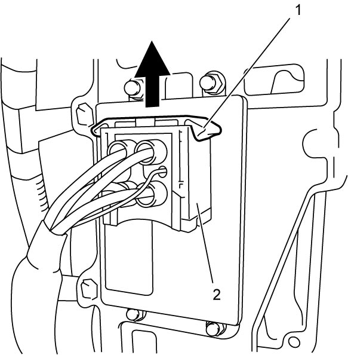
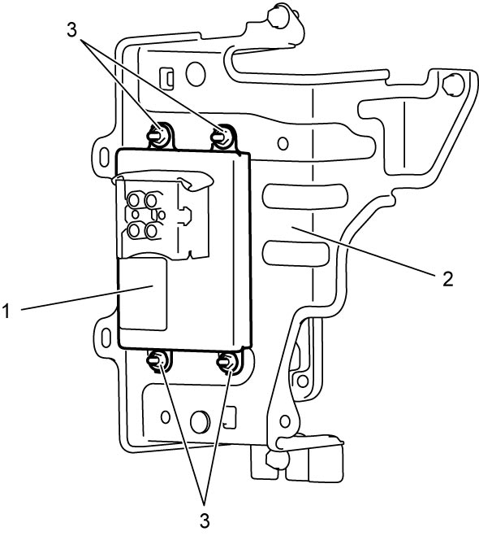
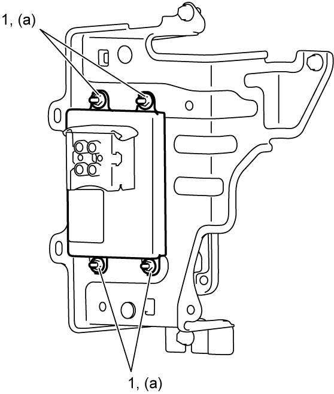

5F
| Smart Drive Unit Removal and Installation |
Removal
1)Remove left front fender lining. 
2)Release lock lever (1) by pulling it in arrow direction and then disconnect smart drive unit connector (2).


 "Expand image")
3)Remove smart drive unit (1) by removing smart drive unit nuts (3) from TCM bracket (2).

 "Expand image")
Installation
Reverse removal procedure noting the following points.
•Tighten smart drive unit nuts (1) to specified torque.
•After replacing smart drive unit, perform TCM and Clutch Initialization.

 "Expand image")